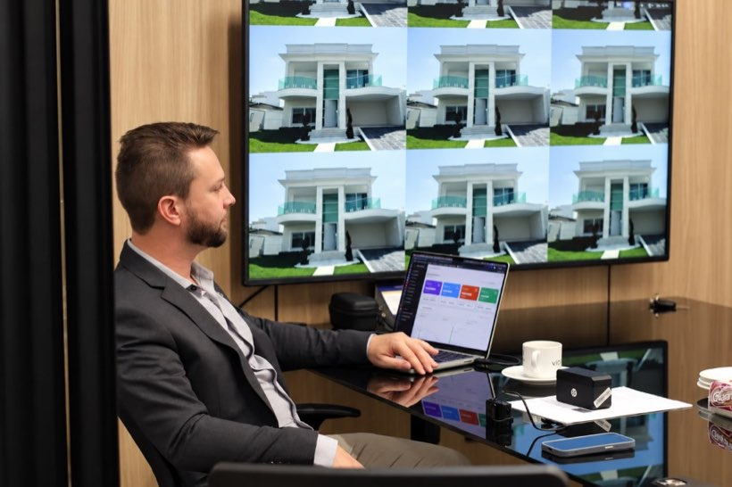
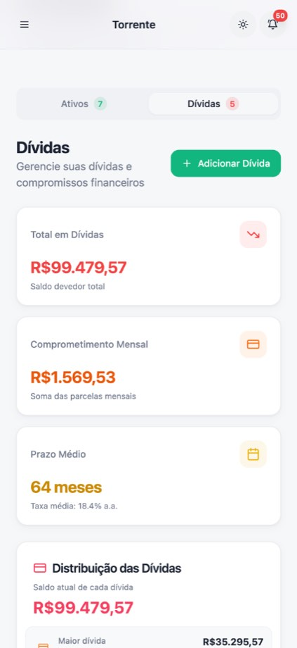
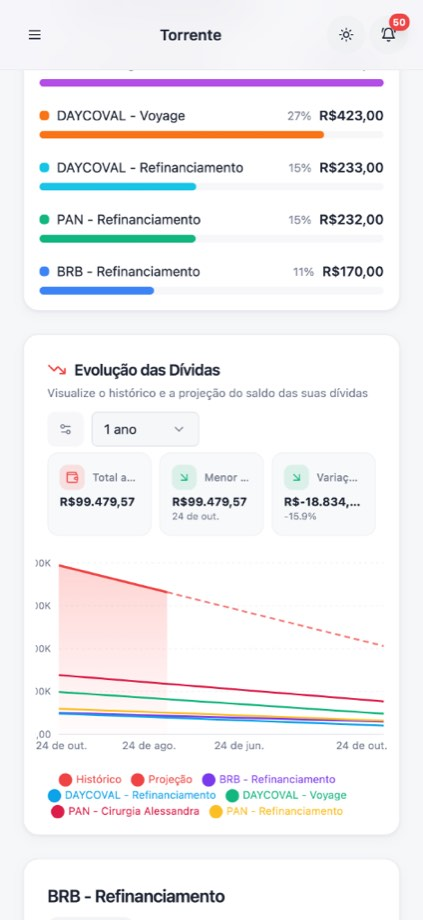
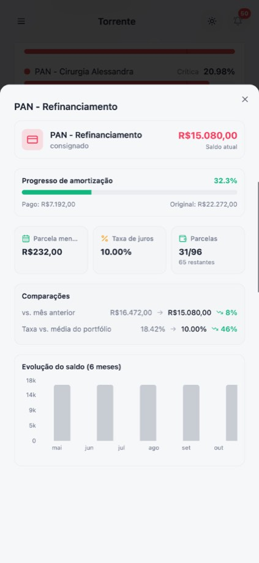
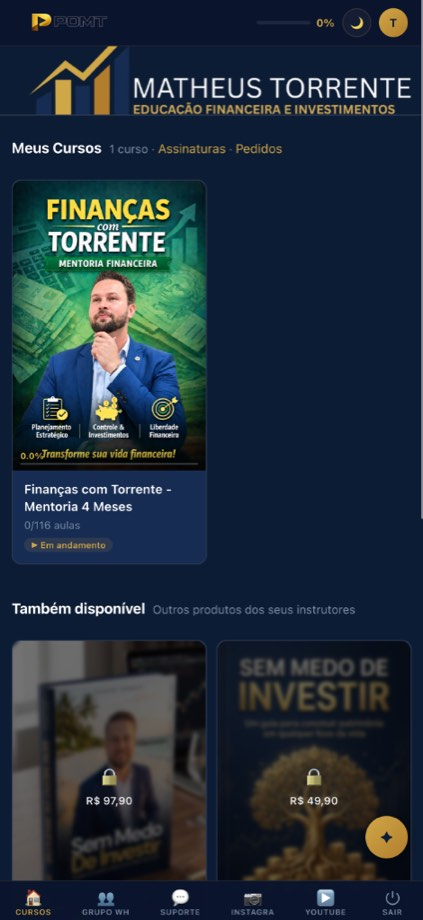
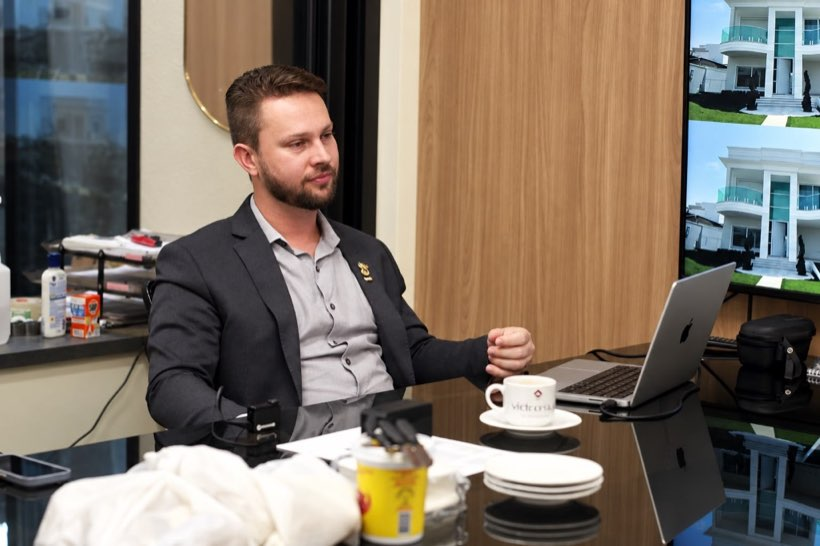

Descubra quanto dinheiro você já está perdendo todo ano por falta de organização patrimonial.
Quem ganha bem, mas mistura contas de casa com o trabalho ou mantém contratos e aplicações ruins, perde dezenas de milhares de reais e anos de vida trabalhando a mais sem necessidade. Em 4 meses de acompanhamento próximo, organizamos suas finanças para você ganhar tempo de qualidade com sua família, seus filhos, sua empresa e com você mesmo.
- Contas de Casa e Trabalho Separadas: Organização simples do dinheiro da sua empresa e das despesas da sua família
- Investimentos Mais Rentáveis: Substituição de aplicações bancárias fracas por opções seguras que rendem acima da inflação
- Redução do Custo de Contratos: Análise de financiamentos e contratos para diminuir juros e despesas desnecessárias

Você provavelmente está tentando resolver isso da forma errada
Existem 4 caminhos que parecem certos, mas custam meses ou anos da sua vida sem nenhum resultado real:
1. "Se eu baixar uma planilha para casa ou para a empresa, tudo vai se organizar"
A verdade: Estamos na era da tecnologia — se o problema fosse falta de planilha ou ferramenta, seu patrimônio já estaria multiplicando. O que resolve é transformação de mentalidade, instrução estratégica e acompanhamento.
2. "Basta trabalhar mais horas e faturar mais que o patrimônio cresce sozinho"
A verdade: Trabalhar mais mantendo as contas de casa e do trabalho misturadas só aumenta o cansaço e faz mais dinheiro escorrer sem você ver para onde foi.
3. "Vou deixar meu dinheiro nas aplicações automáticas do meu banco"
A verdade: Produtos bancários comuns costumam cobrar taxas escondidas e render menos que a inflação real, corroendo o fruto do seu trabalho ano após ano.
4. "Vou entrar em financiamentos olhando apenas se a parcela cabe no mês"
A verdade: Sem revisar contratos e taxas com visão de Economista, você chega a pagar 2 ou 3 imóveis pelo preço de 1 ao longo dos anos.
O plano de 4 Meses para organizar e multiplicar seu patrimônio
Orientação simples e direta sobre as contas da sua família, empresa, contratos e investimentos.
Organização e Controle
Organização das contas pessoais, familiares e profissionais, identificação de gastos desnecessários e definição de metas para guardar dinheiro.
Redução de Custos e Reserva
Revisão de financiamentos e contratos para pagar menos juros, além da criação de uma reserva financeira segura para a família ou empresa.
Melhores Investimentos
Escolha de opções seguras e mais rentáveis para fazer o seu dinheiro crescer acima do aumento dos preços (inflação).
Construção de Patrimônio
Planejamento prático para realizar conquistas da família (bens, viagens, estudos dos filhos) e garantir um futuro tranquilo.
Tudo o que você recebe ao entrar na Mentoria
Estrutura completa de tecnologia, aulas práticas e suporte próximo para organizar e multiplicar seu patrimônio:
Aplicativo de Organização Financeira
Acesso ao nosso aplicativo exclusivo para acompanhar suas contas pessoais, familiares e empresariais com praticidade na palma da mão.
Plataforma com +120 Aulas Gravadas
Uma plataforma completa com mais de 120 aulas práticas liberadas por 12 meses para você assistir quando quiser.
Encontros Mensais Ao Vivo (de 1h a 2h+)
Aulas mensais ao vivo durante os 4 meses para direcionamento prático — e todas também ficam gravadas na plataforma para você rever depois.
Grupo Coletivo + Equipe de Suporte
Grupo exclusivo de alunos com liberdade para conversar, fazer conexões (networking) e tirar dúvidas com nossa equipe dedicada de suporte.
Veja o App Torrente por dentro
Acesso Incluso na Mentoria ✓


Plataforma Exclusiva POMT (Aulas + Comunidade)
12 Meses de Acesso Liberado ✓
Quem está ao seu lado: Matheus Torrente na prática
Economista CORECON-RO · +R$ 50M sob Consultoria ✓
O investimento com maior retorno para o seu patrimônio
O valor total da Mentoria de 4 Meses (com 1 ano inteiro de acesso ao conteúdo) é de R$ 1.497,00. Analise sob a ótica de custo diário, semanal e mensal:
Diluído nos 365 dias de acesso anual
Menos de R$ 30 por semana no plano anual
Equivalente mensal no ano (ou R$ 1.497,00 no total)
O que faz você ganhar bem, mas não ver o patrimônio crescer
- Misturar o dinheiro do trabalho/empresa com as contas de casa Sem clareza do que sobra
- Financiamentos de imóveis ou veículos pagando juros altos Milhares de reais perdidos
- Dinheiro aplicado em produtos comuns de banco que rendem pouco Perda para a inflação
- Trabalhar muito o ano inteiro e sentir que o patrimônio estacionou Esforço sem retorno
O resultado que você conquista por R$ 4,10 ao dia
- Contas de casa e da empresa no lugar, sabendo exatamente quanto sobra Clareza total ✓
- Financiamentos e contratos ajustados sem jogar dinheiro fora com juros Economia real ✓
- Seu patrimônio crescendo acima da inflação com segurança Multiplicação ✓
- Tranquilidade para realizar planos da família sem comprometer o futuro Liberdade ✓
Investimento Total da Mentoria Completa: R$ 1.497,00 (apenas R$ 4,10/dia no ano, R$ 374,25/mês nos 4 meses ou 10x de R$ 180,68)
O que dizem empresários e gestores que aplicaram a mentoria
Assista aos depoimentos em vídeo ou leia abaixo o relato real de quem já passou pelo acompanhamento:


"Meu consultor financeiro foi o diferencial na minha vida. Várias escolhas que fiz foram com base nas orientações que ele me deu. Hoje tenho controle e previsibilidade sobre minha empresa e sobre as finanças."
"O Matheus ajudou muito na organização das minhas contas. O apartamento que tenho hoje foi fruto de uma estratégia que ele mostrou, além de conseguir um desconto de 32 mil só por trocar um indexador de contrato. Sou muito grato por tudo."
"Eu aprendi muito sobre dinheiro e gestão financeira depois que conheci a mentoria do Matheus Torrente. Hoje a gente (minha família) já viajou bastante, aproveitamos muito e ainda investimos dinheiro."
Garantia Blindada de Satisfação
Compromisso total com o seu resultado: se dentro do período legal de garantia você entender que a mentoria não atende às suas expectativas, basta solicitar o reembolso integral e devolvemos 100% do valor investido.
Perguntas Frequentes
1. A mentoria serve tanto para Pessoa Física quanto para Empresários e Profissionais Liberais?
Sim! A metodologia integra organização pessoal, planejamento patrimonial familiar e visão empresarial (fluxo de caixa, separação entre contas PF e PJ e alocação estratégica de lucros e reservas).
2. A mentoria fala apenas sobre investimentos?
Vai muito além: abordamos planejamento financeiro integrado, proteção de patrimônio contra a inflação, otimização de custos e indexadores de contratos, reserva estratégica e construção de uma carteira sólida de curto, médio e longo prazo.
3. Já tenho investimentos hoje, mas sinto que rendem pouco ou estão desorganizados. A mentoria ajuda?
Com certeza. Avaliamos a estrutura da sua alocação atual, identificamos produtos bancários ineficientes ou taxas ocultas e estruturamos uma estratégia focada em rentabilidade real acima da inflação.
4. Como funciona o acompanhamento durante os 4 meses?
Você participa de encontros estratégicos regulares para aplicar cada etapa da metodologia ao seu patrimônio, tirar dúvidas diretamente comigo e ajustar sua rota conforme o cenário econômico.
5. O conteúdo funciona para o planejamento financeiro da família inteira?
Sim! A metodologia foi desenhada para alinhar metas familiares de curto, médio e longo prazo — como troca de bens, aquisição de imóveis com inteligência financeira, viagens, estudos dos filhos e aposentadoria tranquila.
6. Não tenho tempo livre para ficar estudando mercado financeiro. Funciona para mim?
Sim! A mentoria foi desenhada justamente para quem tem rotina corrida: você não precisa estudar horas de teoria, nós vamos direto à tomada de decisão prática sobre o seu patrimônio.
7. Como vocês protegem meu patrimônio contra a inflação?
Como Economista, ajusto toda a sua alocação olhando para o ganho real (acima da inflação verdadeira), para que o seu poder de compra cresça de verdade todos os anos, e não apenas no papel.
8. Também revisamos contratos, financiamentos e custos fixos altos?
Sim! Muitas vezes um único ajuste de indexador de contrato ou reestruturação de custo fixo gera uma economia de dezenas de milhares de reais para o seu patrimônio.
9. O que está incluso e por quanto tempo terei acesso?
Você recebe 4 meses de acompanhamento com aulas mensais ao vivo (que também ficam gravadas), acesso ao Aplicativo de Organização Financeira, grupo coletivo de alunos para networking e dúvidas com suporte da nossa equipe, além de 12 meses (1 ano completo) de acesso à plataforma com mais de 120 aulas gravadas.
10. Qual a diferença entre a Mentoria e os cursos tradicionais do mercado?
Em vez de aulas teóricas genéricas, você tem o acompanhamento de um Economista registrado e Conselheiro do CORECON-RO (com +R$ 50 milhões sob consultoria), aplicando estratégias testadas no mercado real.
11. Existe garantia de satisfação?
Sim. Você conta com nossa Garantia Blindada de Satisfação: dentro do prazo legal, caso entenda que a mentoria não atende às suas expectativas, basta solicitar o reembolso integral de 100% do valor investido.
12. Como faço para garantir minha vaga na turma atual?
Você pode escolher: clique no botão dourado para ir direto à página de compra segura e garantir sua vaga imediatamente, ou clique no botão verde do WhatsApp abaixo para falar diretamente comigo ou com minha equipe.